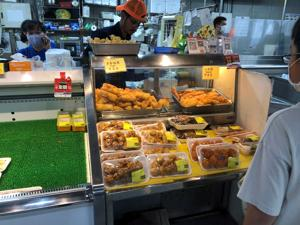
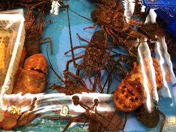
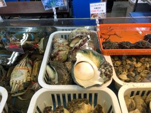

うるがいの話 ある日
最新: 泊いゆまち【うるがいの話 ある日】とは 一日だけのプログです
『うるがいの話』の最新一日だけのプログで、通信料が少なく経済的だ。カニの画像をクリックすると全ての日付が載る『うるがいの話』サイトを表示します
|
|
【うるがいの話】 うるがい(ｳﾙｶﾞｲ urugai)とは、『もずくがに』の名前でとても大きくなります。 |
|---|---|
|
|
【カミマヤーの話】 猫のことを方言でマヤーといいます。カミマヤー（kamimayaa）とは、神の猫のことです。 |
|
【たながぁの音楽】 たながぁ（ﾀﾅｶﾞｰ tanagaa）とは手長えびのことで、何種類かあり大きいのは車 エビぐらいになります。 |

|
【ぶながぁの話】 ぶながぁ(ﾌﾞﾅｶﾞｰ bunagaa)とは、赤い髪の毛、赤い身体、そして身長は１ｍ２０ｃｍ ぐらい、川の蟹を食べているの目撃された。場所は沖縄県国頭郡大宜味村のと ある村僕の隣近所に住んでいる爺さんから、聞いた話です。 |
|
|
【ギーマの話】 ギーマ(giima)とは、山原の里山に咲くスズランに似た、 花を付けます。実は食べられます、 気が付くと口の周りが紫になっています。 |
2022年10月13日 (木）泊いゆまち
15:33
  
１１日（火）に泊魚市場から糸満漁港に移転した。『泊いゆまち』はどうなる
のだろうと、居ても立っても居られなず（いささかオーバーだが）、泊いゆま
ちに行く。平日なので混んでなく、スムーズに車を駐車し、いつも利用してい
る所へ行く。なんら、変化なし、さっそく天ぷらを買うために小学生（学校は
秋休みなのかな）を連れた父親の連れの後ろに並ぶ。かつては６０円から８０
円へ値上がりした天ぷらをみながら、これもプーチンの戦争の影響かと考えて
いた。東南アジア系の店員さんが、カタコトの日本語で私の注文に応対してく
れるのだが、天ぷらを袋にいれる手さばきが、下手で魚テンプラ５個の注文で
２個箱から、落とした（落としたのはひろわず、新しい別のものを選んだので
ほっとする）。次に寿司のパックを購入する、６００円と値段は安いが、個数
が８割程に減っている。これも、プーチンのせいだと。最後にマグロのぶつ切
り５百円を２パック買う。これは、いつもサイズでいつもの値段だった。家に
帰るなり、昼ごはんとして食べる、鮮魚店の息子はとてつもなく刺身が食べた
いのある。かつてはイセエビや、シラウニ、ヤコウ貝、そして赤ジンなどの高
級魚を日常的に食べてたが、いまは眺めるだけである。
１５時２９分 ビットコインの総資産 ￥８、１１７↑